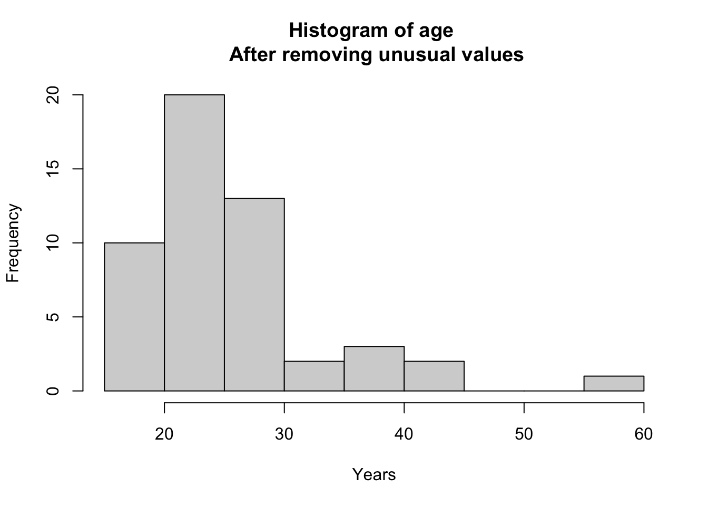
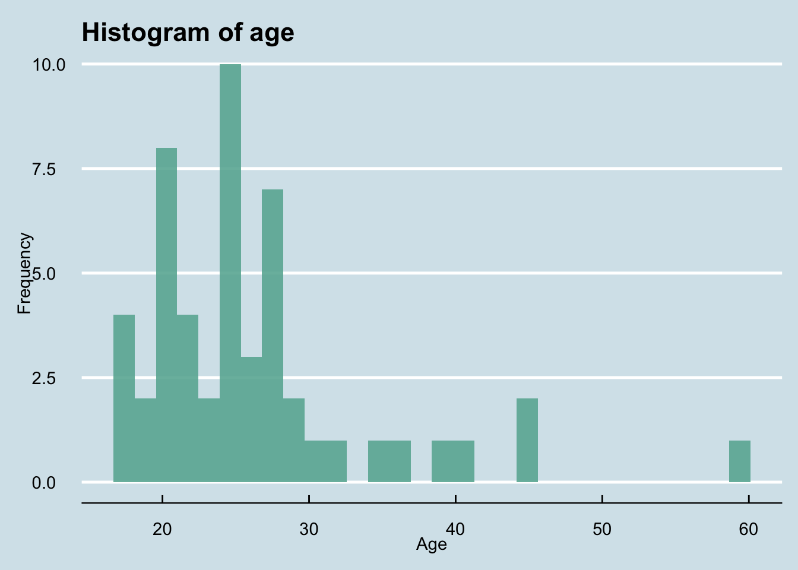
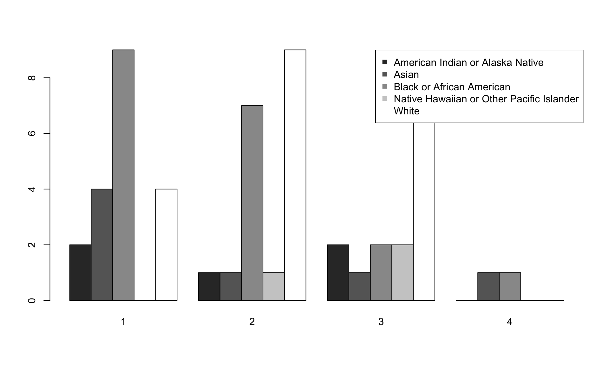
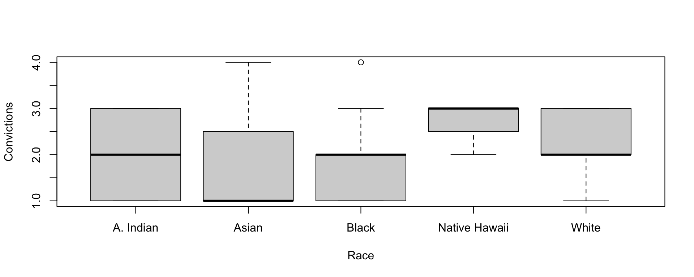

Journal
Exploratory Data Analysis
2021 | 9 | 13 Last compiled: 2021-09-13
How should we proceed with exploratory data analysis? For this session we’re going to be using a dataset that I made up. We will soon use real data, but for now I’m trying to make things simple.
EDA is one of the most important skills of a statistician. It is what I do whenever I open a new dataset. It requires careful thinking and analysis, and is not something that can be replaced by a machine (yet).
Throughout this post I use text from DVB and HS.
Load data
First, it’s good to have a title in your R code.
# Title: EDA Lecture
# Date: 9/12/2021
# Author: MCuellarAnd to load the data.
# Set working directory as a string variable for use in other code chunks.
# This will depend on your local environment.
# setwd("~/Documents/Penn/Classes/Crim 250 - Statistics for the Social Sciences/Slides/3. Exploratory data analysis/")
# Load the data, which is a csv file
dat <- read.csv(file = 'simulated-crime.csv')
# Look at the first few rows of data)
head(dat)## gender crime.type age number.of.convictions
## 1 female murder 18 1
## 2 male aggravated assault 21 1
## 3 female aggravated assault 45 3
## 4 male robbery 32 4
## 5 female burglary 20 2
## 6 male larceny-theft 150 1
## race
## 1 White
## 2 Black or African American
## 3 American Indian or Alaska Native
## 4 Asian
## 5 Native Hawaiian or Other Pacific Islander
## 6 WhiteVariables
Now we figure out what variables we have, and what their types are.
# What variables are there in dat?
names(dat)## [1] "gender" "crime.type" "age"
## [4] "number.of.convictions" "race"# Summarize them so I can see their types quickly.
summary(dat)## gender crime.type age number.of.convictions
## Length:54 Length:54 Min. : 18.00 Min. :1.000
## Class :character Class :character 1st Qu.: 21.25 1st Qu.:1.000
## Mode :character Mode :character Median : 25.00 Median :2.000
## Mean : 49.87 Mean :1.981
## 3rd Qu.: 28.75 3rd Qu.:3.000
## Max. :999.00 Max. :4.000
## race
## Length:54
## Class :character
## Mode :character
##
##
## We have five variables: gender, crime type, age, number of convictions, and race.
Gender
Let’s start exploring gender. Gender is a categorical variable, so it can be summarized with a table.
(Table)
# Make a table of gender.
table(dat$gender)##
## female male
## 16 38Note that the code for that was putting the variable name inside the function parentheses. We can also use what’s called a piping operator, which can be simpler to use. For this we first install the package and call the library.
# Same as above, but with the piping operator
if (!require('dplyr')) install.packages('dplyr'); library('dplyr')
# Note, the first time you need to install.packages("dplyr), then you can just call the library.Then we can get a table, same as above, but using the piping operator. It can be read like this: take the data in dat$gender and make a table out of it.
dat$gender %>% table()## .
## female male
## 16 38(Bar chart or bar plot)
We could also make a barchart or barplot of gender.
# Histogram of gender.
counts <- table(dat$gender)
barplot(counts, main="Gender Distribution", xlab="Gender", names=c("Female", "Male"))A bar chart displays the distribution of a categorical variable, showing the counts for each category next to each other for easy comparison. Bar charts should have small spaces between the bars to indicate that these are freestanding bars that could be rearranged into any order.
(Pie chart)
Pie charts are just like bar charts, but put in a circle. They are overused, and they often do not make it easier to understand what is going on with the data.
See Edward Tufte’s post about pie charts: https://www.edwardtufte.com/bboard/q-and-a-fetch-msg?msg_id=00018S
# Histogram of gender.
counts <- table(dat$gender)
pie(counts, labels=c("Female", "Male"), main="Gender Distribution")
Crime type
What about crime type?
dat$crime.type %>% table()## .
## aggravated assault arson burglary forcible rape
## 5 9 9 4
## larceny-theft motor vehicle theft murder robbery
## 6 8 4 9There are eight types of crimes. These are the index crimes used by the FBI to generate its annual crime index.
Age
(From HS)
Center: The most common measure of central tendency is the mean. For skewed distribution or when there is concern about outliers, the median may be preferred.
Spread: The variance and standard deviation are two useful measures of spread. The variance is the mean of the squares of the individual deviations. The standard deviation is the square root of the variance. For Normally distributed data, approximately 95% of the values lie within 2 sd of the mean. The interquartile range (IQR) is a robust measure of spread.
Skewness and kurtosis: Skewness is a measure of asymmetry. Kurtosis is a more subtle mea- sure of peakedness compared to a Gaussian distribution.
For age, we can summarize the variable to get a sense for center and spread.
dat$age %>% summary()## Min. 1st Qu. Median Mean 3rd Qu. Max.
## 18.00 21.25 25.00 49.87 28.75 999.00Uh oh. Why is the max age 999? Usually these high numbers are used as codes in the data to denote a response that was unusual somehow, such as “don’t know”, “refused to answer”, “blank (no answer)”, “legitimate skip”, etc.
We will change the number 999 to be a code for “missing”.
dat$age <- dat$age %>% na_if(., "999")(Histogram)
We can make a histogram to quickly get a sense of shape (i.e., how age is distributed) and unusual observations.
# Using base R
hist(dat$age, main="Histogram of age", xlab="Years", ylab="Frequency")There are still some very high ages! We need to make sure we get these outliers. Let’s sort the data and then look at the last few values
dat$age %>% sort() %>% tail()## [1] 40 45 45 60 150 200Yep, there are two ages that are wrong (150 and 200), probably because of a data input error somewhere. Let’s just make those NA’s too.
dat$age <- dat$age %>% na_if(., "150")
dat$age <- dat$age %>% na_if(., "200")Ok, now the histogram should look better.
hist(dat$age, main="Histogram of age \n After removing unusual values", xlab="Years", ylab="Frequency")
This is the same as above, but using ggplot, which is a bit more complex to set up, but it has much more functionality.
# Using ggplot and the piping %>% operator
if (!require('ggplot2')) install.packages('ggplot2'); library('ggplot2')
p <- dat %>%
ggplot(., aes(x = age)) + geom_histogram(fill="#69b3a2", alpha=0.9) + labs(x="Age", y="Frequency", title="Histogram of age")
p# Using cool themes: https://yutannihilation.github.io/allYourFigureAreBelongToUs/ggthemes/
#install.packages("ggthemes")
library(ggthemes)
p + theme_fivethirtyeight()p + theme_economist()
p + theme_excel()With practice, histograms are one of the best ways to quickly learn a lot about your data, including central tendency, spread, modality, shape and outliers.
Number of convictions
What about number of convictions?
summary(dat$number.of.convictions)## Min. 1st Qu. Median Mean 3rd Qu. Max.
## 1.000 1.000 2.000 1.981 3.000 4.000How is number of convictions distributed?
hist(dat$number.of.convictions, main="Number of convictions", xlab="Convictions")(Barplot)
Let’s make a barplot to see this.
counts <- table(dat$gender, dat$crime.type)
barplot(counts, col=c("red", "blue"), legend=TRUE)dev.off()## null device
## 1Race
The race categories included in this simulated dataset are the US Census categories for race:
table(dat$race)##
## American Indian or Alaska Native
## 5
## Asian
## 7
## Black or African American
## 19
## Native Hawaiian or Other Pacific Islander
## 3
## White
## 20What about relationships between variables?
[[Please remember this data is totally made up, so the conclusions reflect nothing about reality.]]
How is race related to number of convictions?
Cross-tabulation is the basic bivariate non-graphical EDA technique.
table(dat$race, dat$number.of.convictions)##
## 1 2 3 4
## American Indian or Alaska Native 2 1 2 0
## Asian 4 1 1 1
## Black or African American 9 7 2 1
## Native Hawaiian or Other Pacific Islander 0 1 2 0
## White 4 9 7 0(Side-by-side bar chart)
Side-by-side bar charts are also nice.
barplot(table(factor(dat$race), dat$number.of.convictions), beside=T,
col=c("gray20", "gray40", "gray60", "gray80", "gray100"))
legend("topright", levels(factor(dat$race)), col=c("gray20", "gray40", "gray60", "gray80", "gray100"), pch=15)
(Boxplot)
It’s probably easier to visualize this in a boxplot rather than a table.
plot(factor(dat$race), dat$number.of.convictions, ylab="Convictions", xlab="Race", names=c("A. Indian","Asian","Black","Native Hawaii","White"))
What does the boxplot mean? Boxplots show robust measures of location and spread as well as providing information about symmetry and outliers.
Side-by-side boxplots are the best graphical EDA technique for examining the relationship between a categorical variable and a quantitative variable, as well as the distribution of the quantitative variable at each level of the categorical variable.
How is age related to number of convictions? This next plot is a scatterplot, but it’s kind of a strange one that doesn’t tell us much because there is not much variability in number of convictions.
plot(dat$age, dat$number.of.convictions, xlab="Age", ylab="Convictions")(Scatterplot)
A scatterplot is great when you want to compare two continuous quantitative variables. Since our dataset doesn’t have great examples of these, we’ll just generate two random normal vectors and make a scatterplot to compare them.
x <- rnorm(1000, 0, 1)
y <- rnorm(1000, 0, 1)
plot(x,y, main="Scatterplot comparing x and y")